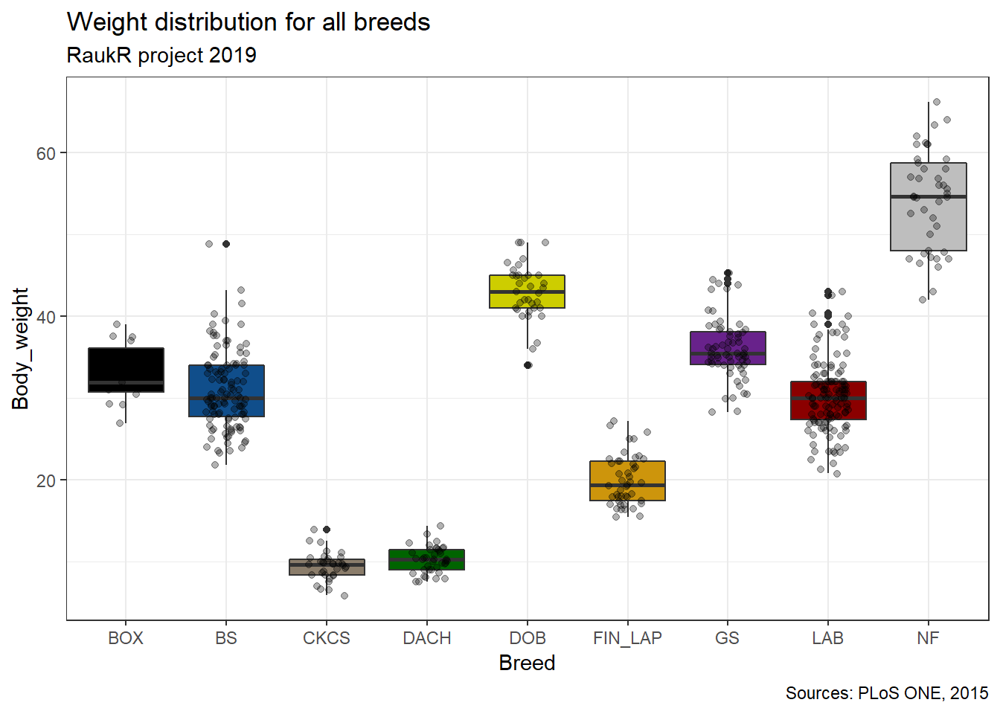
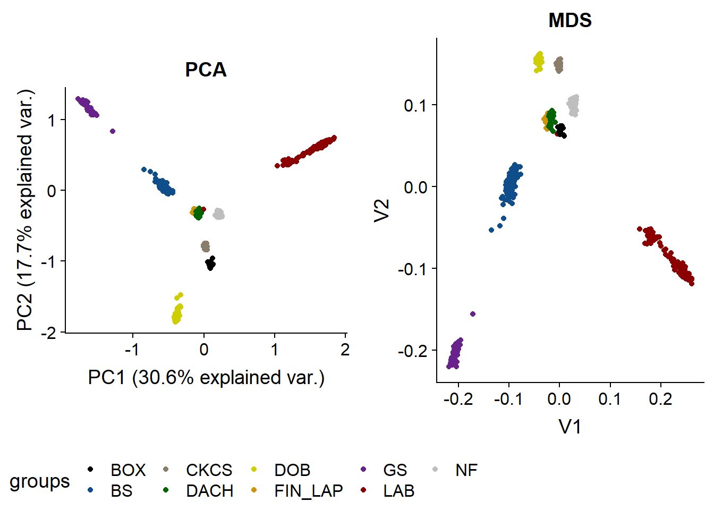

RaukR project
Analysis of genomic array data from 9 dog breeds
Cátia Pereira, Dovilė Sinkevičiūtė, Minna Sivonen and Svandís Sæmundsdóttir
19/06/2019
Description of the dataset
# number of dogs per breed (male, female)
dogs <- data_raw@phdata %>%
dplyr::group_by(Breed, sex) %>%
dplyr::summarize(n = n()) %>%
group_by(Breed) %>%
spread(key="sex", value = "n" ) %>%
mutate_at(vars(-group_cols()), ~replace(., is.na(.), 0))
dogs$Breed_name <- c("Boxer",
"Belgian Shepperd",
"Cavalier King Charles spaniel",
"Dachshund",
"Doberman pinscher",
"Finnish lapphund",
"German Shepperd",
"Labrador retriever",
"Newfoundland")
colnames(dogs)<- c("Abbreviation", "Female", "Male", "Breed")
dogs[,c("Breed", "Abbreviation", "Female", "Male")]Distributions of Individuals by Country
Table
country_info <- data_raw@phdata %>%
group_by(Country) %>%
summarize(total_dogs = sum(n())) %>%
arrange(desc(total_dogs))
country_info$fullname <- c("Finland", "Belgium", "Sweden", "France", "Denmark")
colnames(country_info)<- c("Abbreviation", "Total number of dogs", "Country")
country_info[,c("Country", "Abbreviation", "Total number of dogs")]Map
ggmap(europe.map) +
geom_point(aes(x = 18.063240, y = 59.334591), color = 'white', size = 6.6) + #Sweden
geom_point(aes(x = 2.349014, y = 48.864716), color = 'white', size = 5.3) + #France
geom_point(aes(x = 24.945831, y = 60.192059), color = 'white', size = 7.1) + #Finland
geom_point(aes(x = 11.568337, y = 55.676098), color = 'white', size = 5.2) + #Denmark
geom_point(aes(x = 4.402771, y = 51.260197), color = 'white', size = 7) #Belgium
Distributions of Breeds by Country
Sweden
sweden <- subset(breeds.country, breeds.country$Country == 'Swe')
sweden$Country <- NULL
swedenFrance
france <- subset(breeds.country, breeds.country$Country == 'Fra')
france$Country <- NULL
franceFinland
finland <- subset(breeds.country, breeds.country$Country == 'Fin')
finland$Country <- NULL
finlandDenmark
denmark <- subset(breeds.country, breeds.country$Country == 'Den')
denmark$Country <- NULL
denmarkBelgium
belgium <- subset(breeds.country, breeds.country$Country == 'Bel')
belgium$Country <- NULL
belgiumMap
ggdraw(xlim=c(0,2.3), ylim = c(0,1)) +
draw_plot(europe.map.complete, x=0.05, y=0, scale=1.2) +
draw_plot(breed.country.plot, x=1.2, y=0, scale=0.9) Weight
Graph
Weight distribution for all breeds
data_raw@phdata %>%
dplyr::select(Breed, Body_weight) %>%
na.omit() %>%
ggplot(aes(x=Breed, y=Body_weight, fill=Breed)) +
geom_boxplot() +
geom_jitter(width = 0.2, alpha=0.3) +
labs(title="Weight distribution for all breeds",
subtitle="RaukR project 2019",
caption="Sources: PLoS ONE, 2015")+
scale_fill_manual(values = c("black", "dodgerblue4", "bisque4", "darkgreen","yellow3", "darkgoldenrod3", "darkorchid4", "darkred", "grey")) +
theme_bw() +
theme(legend.position = "none")
Table
Table with the mean age and weight of the dogs, taking sex into account
# mean ans sd functions
funm <- function(x){mean(x, na.rm = T)}
#table
dogsWH <- data_raw@phdata %>%
group_by(Breed, sex) %>%
summarize(n = n(),
mean.Age = funm(Age),
mean.Weight = funm(Body_weight))
dogsWH$sex[dogsWH$sex == 0]<- "female"
dogsWH$sex[dogsWH$sex == 1]<- "male"
dogsWHPrincipal Component Analysis
# Find marker for PCA analysis
# qc0 <- check.marker(data_raw, call = 0.95, perid.call=0.95,
# maf=1e-06, p.lev=1e-08, ibs.exclude="lower")
# # Save output from check.marker
# data.qc0 <- data_raw[qc0$idok, qc0$snpok]
#
# # Remove chromosome 39 (X) from dataset
# autosomalMarkerNames <- snpnames(data.qc0)[chromosome(data.qc0) != 39]
# # Compute genomic kinship matrix
# data.qc0.gkin <- ibs(data.qc0[, autosomalMarkerNames], weight = "freq")
# # Transform it to a distance matrix
# data.qc0.dist <- as.dist(0.5 - data.qc0.gkin)
# # Perform multidimensional scaling to display individuals on a 2D
# # plot preserving genomic distances between them
# data.qc0.mds <- cmdscale(data.qc0.dist)
# # Save the results so no need to run every single time
# pca_result <- save(data.qc0.mds, file="pca_results.rdat")
# Plot the result
load("pca_results.rdat")
df_data_raw <- data.frame(Dim_1 = data.qc0.mds[,1], Dim_2 = data.qc0.mds[,2], Breed= data_raw@phdata$Breed)
ggplot(df_data_raw, aes(Dim_1, Dim_2, color=Breed)) +
geom_point(alpha = 0.8) +
labs(title="Principal Component Analysis",
subtitle="RaukR project 2019") +
theme_bw() +
scale_color_manual(values = c("black", "dodgerblue4", "bisque4", "darkgreen","yellow3", "darkgoldenrod3", "darkorchid4", "darkred", "grey")) Multidimensional scaling MDS
#arranging the two grids side by side with one legend
library(gridExtra)
library(grid)
library(ggplot2)
library(lattice)
library(ggpubr)#arranging the two grids side by side with one legend
ggarrange(g,z, ncol=2, nrow=1, common.legend = TRUE, legend="bottom")